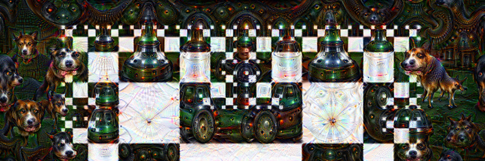

Hello World

- Create an entirely public repository on github.com named YOURACCOUNTNAME.github.io .
- No server side component so pages must be regenerated each time.
- Private files may be uploaded but they will need to be encrypted (e.g. using Ansible Vault)
- This means API keys etc will need to be stored in Ansible Vault before being consumed by Ansible, they cannot be made public due to abuse potential.
- No mysql or other database, so data will need to be stored in sqlite or equivalent, or json file to be queried client side.
- As the build is automatic, the commit message has been set to the build id.
Banter
Banter is a Unity-based Social VR platform that users can create worlds built with Unity Assets and A-Frame.
Rules of creating a Banter space :
- Assets of the scene need to be added to the repository and A-Frame needs to be added to the HTML page.
- The page when loaded into Banter will load as a space.
- To help debug, set up your Quest to connect to your PC with a USB cable, click "allow" in the popup and when in Banter, browse to a space. Open up chrome on your PC, type chrome://inspect and look for the connected device under Remote Devices. Click on the one representing Banter and it will open the Chrome developer tools.
Linking to a Banter cinematic experience
There are (at least) 2 different setups for viewing a stream in Banter within their prebuilt cinema :
- Vising a space such as the Cinema2D space. The youtube link is hardcoded within the scene, but you can create your own version of the page on glitch.com by remixing it on the project page
-
Creating and visiting a link to a parameterised version of that page such as My Twitch Stream. As of documentation, valid parameters for livestream-type are (twitch or youtube) and URLs must be fully qualified YouTube or Twitch URLs.
Sample links (open within Banter)
-
Cinema2D space
-
Shoseki Streaming space
-
CityGPT (Demo city generated by ChatGPT) space
Column 1
Column 2
Column 3
Index Page Footer
Site Navigation Footer